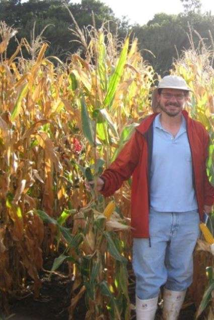

About Me
My name is Marcelo J. Carena, I was born in Argentina, and I
have been a plant breeder representing the public and private
sectors for almost 30 years, most of the time serving as
professor and maize breeding unit leader at North Dakota State
University.
I have a B.S. in Agronomy (1987-1991) from Argentina, a MS in
Plant Breeding (1992-1995) from Europe, and a Ph.D. in Plant
Breeding (1996-1999) from Iowa State University in the USA.
From 1999 to 2017, I led the NDSU maize breeding and genetics
research program.
My Previous Work:
The program was worldwide known for being the most northern
public maize breeding program in North America, moving maize
north to cooler seasons and west to dry areas. During that
time my students and I developed over 90 unique short-season
germ plasm, lines, and hybrids with PVP and innovation awards.
It was the only maize breeding program in the USA fully funded
by grower organizations receiving royalties and fees from
products still being commercialized today. I also managed the
North Dakota Hybrid Corn Performance Testing (HCPT) program
for the state while developing national and worldwide capacity
building and plant genetic resources IP policies representing
the USDA at the United Nations.
My program has challenged agricultural dilemmas to develop the
next generation of sustainable cultivars, bridging the missing
link between industry and farmers. I currently serve as senior
adviser and contractor for breeding project reviews and
guidance as well as trainer worldwide.
I led several national public-private programs with focus on
genetic diversity research, adapting tropical genetic
materials to shorter world seasons. The breeding program has
developed not only products but also non-destructive methods
for high throughput phenotyping of genetically complex traits,
difficult to measure, and highly influenced by the
environment, which helped mitigate climate changes and has
saved millions of dollars to industry and farmers (e.g., AUDDC
for fast dry down and BRACE for drought tolerance).
